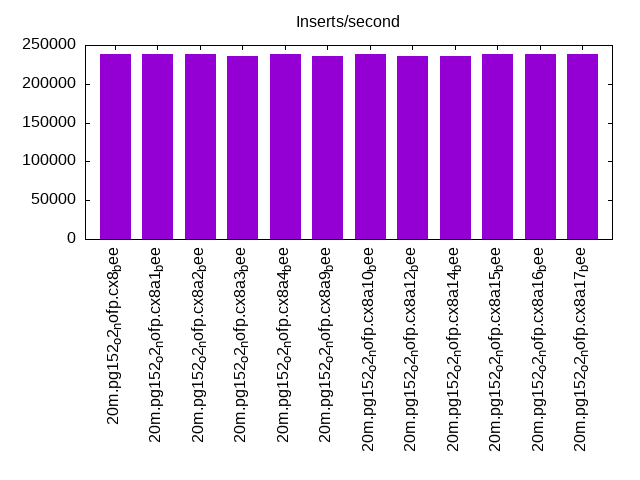
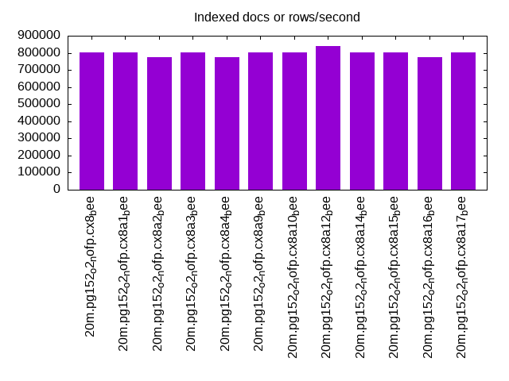
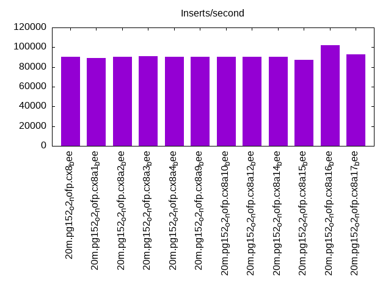
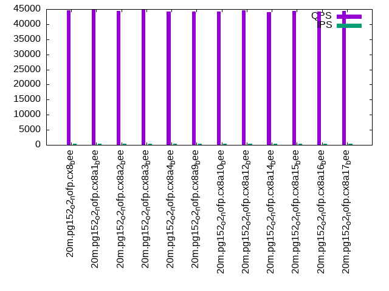
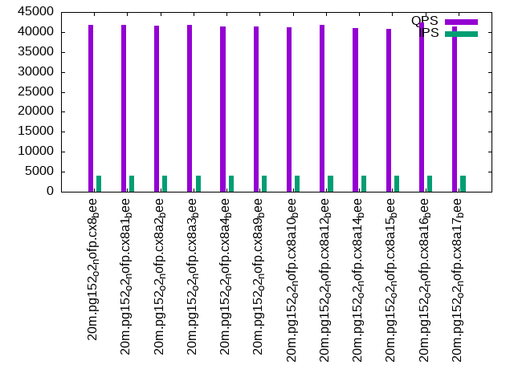

This is a report for the insert benchmark with 20M docs and 4 client(s). It is generated by scripts (bash, awk, sed) and Tufte might not be impressed. An overview of the insert benchmark is here and a short update is here. Below, by DBMS, I mean DBMS+version.config. An example is my8020.c10b40 where my means MySQL, 8020 is version 8.0.20 and c10b40 is the name for the configuration file.
The test server has 8 AMD cores, 16G RAM and an NVMe SSD. It is described here as the Beelink. The benchmark was run with 4 clients and there were 1 or 3 connections per client (1 for queries or inserts without rate limits, 1+1 for rate limited inserts+deletes). It uses 4 tables, one per client. It loads 20M rows per table without secondary indexes, creates secondary indexes, then inserts 50M rows per table with a delete per insert to avoid growing the table. It then does 3 read+write tests for 1800s each that do queries as fast as possible with 100, 500 and then 1000 inserts/second/client concurrent with the queries and 1000 deletes/second to avoid growing the table. The database is cached by Postgres. Clients and the DBMS share one server. The per-database configs are in the per-database subdirectories here.
The tested DBMS are:
The numbers are inserts/s for l.i0 and l.i1, indexed docs (or rows) /s for l.x and queries/s for q*.2. The values are the average rate over the entire test for inserts (IPS) and queries (QPS). The range of values for IPS and QPS is split into 3 parts: bottom 25%, middle 50%, top 25%. Values in the bottom 25% have a red background, values in the top 25% have a green background and values in the middle have no color. A gray background is used for values that can be ignored because the DBMS did not sustain the target insert rate. Red backgrounds are not used when the minimum value is within 80% of the max value.
| dbms | l.i0 | l.x | l.i1 | q100.1 | q500.1 | q1000.1 |
|---|---|---|---|---|---|---|
| 20m.pg152_o2_nofp.cx8_bee | 238095 | 804000 | 90121 | 44640 | 42830 | 41857 |
| 20m.pg152_o2_nofp.cx8a1_bee | 238095 | 804000 | 88889 | 44810 | 42998 | 41830 |
| 20m.pg152_o2_nofp.cx8a2_bee | 238095 | 773077 | 90121 | 44403 | 42710 | 41601 |
| 20m.pg152_o2_nofp.cx8a3_bee | 235294 | 804000 | 91228 | 44828 | 42791 | 41763 |
| 20m.pg152_o2_nofp.cx8a4_bee | 238095 | 773077 | 90435 | 44214 | 42380 | 41401 |
| 20m.pg152_o2_nofp.cx8a9_bee | 235294 | 804000 | 90435 | 44223 | 42527 | 41360 |
| 20m.pg152_o2_nofp.cx8a10_bee | 238095 | 804000 | 90121 | 44279 | 42449 | 41162 |
| 20m.pg152_o2_nofp.cx8a12_bee | 235294 | 837500 | 90435 | 44606 | 42900 | 41810 |
| 20m.pg152_o2_nofp.cx8a14_bee | 235294 | 804000 | 90435 | 43996 | 42029 | 40908 |
| 20m.pg152_o2_nofp.cx8a15_bee | 238095 | 804000 | 86956 | 44350 | 42617 | 40858 |
| 20m.pg152_o2_nofp.cx8a16_bee | 238095 | 773077 | 101961 | 44157 | 43289 | 42457 |
| 20m.pg152_o2_nofp.cx8a17_bee | 238095 | 804000 | 92527 | 44368 | 42534 | 41307 |
This table has relative throughput, throughput for the DBMS relative to the DBMS in the first line, using the absolute throughput from the previous table.
| dbms | l.i0 | l.x | l.i1 | q100.1 | q500.1 | q1000.1 |
|---|---|---|---|---|---|---|
| 20m.pg152_o2_nofp.cx8_bee | 1.00 | 1.00 | 1.00 | 1.00 | 1.00 | 1.00 |
| 20m.pg152_o2_nofp.cx8a1_bee | 1.00 | 1.00 | 0.99 | 1.00 | 1.00 | 1.00 |
| 20m.pg152_o2_nofp.cx8a2_bee | 1.00 | 0.96 | 1.00 | 0.99 | 1.00 | 0.99 |
| 20m.pg152_o2_nofp.cx8a3_bee | 0.99 | 1.00 | 1.01 | 1.00 | 1.00 | 1.00 |
| 20m.pg152_o2_nofp.cx8a4_bee | 1.00 | 0.96 | 1.00 | 0.99 | 0.99 | 0.99 |
| 20m.pg152_o2_nofp.cx8a9_bee | 0.99 | 1.00 | 1.00 | 0.99 | 0.99 | 0.99 |
| 20m.pg152_o2_nofp.cx8a10_bee | 1.00 | 1.00 | 1.00 | 0.99 | 0.99 | 0.98 |
| 20m.pg152_o2_nofp.cx8a12_bee | 0.99 | 1.04 | 1.00 | 1.00 | 1.00 | 1.00 |
| 20m.pg152_o2_nofp.cx8a14_bee | 0.99 | 1.00 | 1.00 | 0.99 | 0.98 | 0.98 |
| 20m.pg152_o2_nofp.cx8a15_bee | 1.00 | 1.00 | 0.96 | 0.99 | 1.00 | 0.98 |
| 20m.pg152_o2_nofp.cx8a16_bee | 1.00 | 0.96 | 1.13 | 0.99 | 1.01 | 1.01 |
| 20m.pg152_o2_nofp.cx8a17_bee | 1.00 | 1.00 | 1.03 | 0.99 | 0.99 | 0.99 |
This lists the average rate of inserts/s for the tests that do inserts concurrent with queries. For such tests the query rate is listed in the table above. The read+write tests are setup so that the insert rate should match the target rate every second. Cells that are not at least 95% of the target have a red background to indicate a failure to satisfy the target.
| dbms | q100.1 | q500.1 | q1000.1 |
|---|---|---|---|
| pg152_o2_nofp.cx8_bee | 399 | 1993 | 3989 |
| pg152_o2_nofp.cx8a1_bee | 399 | 1994 | 3989 |
| pg152_o2_nofp.cx8a2_bee | 399 | 1994 | 3987 |
| pg152_o2_nofp.cx8a3_bee | 399 | 1994 | 3987 |
| pg152_o2_nofp.cx8a4_bee | 399 | 1994 | 3989 |
| pg152_o2_nofp.cx8a9_bee | 399 | 1994 | 3987 |
| pg152_o2_nofp.cx8a10_bee | 399 | 1993 | 3989 |
| pg152_o2_nofp.cx8a12_bee | 399 | 1994 | 3989 |
| pg152_o2_nofp.cx8a14_bee | 399 | 1993 | 3989 |
| pg152_o2_nofp.cx8a15_bee | 399 | 1993 | 3989 |
| pg152_o2_nofp.cx8a16_bee | 399 | 1993 | 3989 |
| pg152_o2_nofp.cx8a17_bee | 399 | 1994 | 3989 |
| target | 400 | 2000 | 4000 |
l.i0: load without secondary indexes. Graphs for performance per 1-second interval are here.
Average throughput:
Insert response time histogram: each cell has the percentage of responses that take <= the time in the header and max is the max response time in seconds. For the max column values in the top 25% of the range have a red background and in the bottom 25% of the range have a green background. The red background is not used when the min value is within 80% of the max value.
| dbms | 256us | 1ms | 4ms | 16ms | 64ms | 256ms | 1s | 4s | 16s | gt | max |
|---|---|---|---|---|---|---|---|---|---|---|---|
| pg152_o2_nofp.cx8_bee | 99.941 | 0.060 | 0.011 | ||||||||
| pg152_o2_nofp.cx8a1_bee | 99.954 | 0.044 | 0.001 | 0.022 | |||||||
| pg152_o2_nofp.cx8a2_bee | 99.947 | 0.052 | 0.001 | 0.023 | |||||||
| pg152_o2_nofp.cx8a3_bee | 99.966 | 0.034 | 0.014 | ||||||||
| pg152_o2_nofp.cx8a4_bee | 99.960 | 0.040 | 0.011 | ||||||||
| pg152_o2_nofp.cx8a9_bee | 99.948 | 0.052 | 0.016 | ||||||||
| pg152_o2_nofp.cx8a10_bee | 99.945 | 0.055 | 0.014 | ||||||||
| pg152_o2_nofp.cx8a12_bee | 99.952 | 0.049 | 0.014 | ||||||||
| pg152_o2_nofp.cx8a14_bee | 99.949 | 0.051 | 0.012 | ||||||||
| pg152_o2_nofp.cx8a15_bee | 99.945 | 0.054 | 0.001 | 0.024 | |||||||
| pg152_o2_nofp.cx8a16_bee | 99.946 | 0.054 | 0.011 | ||||||||
| pg152_o2_nofp.cx8a17_bee | 99.946 | 0.054 | 0.011 |
Performance metrics for the DBMS listed above. Some are normalized by throughput, others are not. Legend for results is here.
ips qps rps rmbps wps wmbps rpq rkbpq wpi wkbpi csps cpups cspq cpupq dbgb1 dbgb2 rss maxop p50 p99 tag 238095 0 0 0.0 278.2 102.1 0.000 0.000 0.001 0.439 23124 72.2 0.097 24 1.9 5.2 0.0 0.011 69824 20078 20m.pg152_o2_nofp.cx8_bee 238095 0 0 0.0 281.4 102.9 0.000 0.000 0.001 0.442 23297 71.9 0.098 24 1.9 5.2 0.0 0.022 70387 31577 20m.pg152_o2_nofp.cx8a1_bee 238095 0 0 0.0 280.4 102.6 0.000 0.000 0.001 0.441 23376 72.0 0.098 24 1.9 5.2 0.0 0.023 70124 60634 20m.pg152_o2_nofp.cx8a2_bee 235294 0 0 0.0 279.0 102.2 0.000 0.000 0.001 0.445 23626 71.9 0.100 24 1.9 5.2 0.0 0.014 70224 60334 20m.pg152_o2_nofp.cx8a3_bee 238095 0 0 0.0 280.6 102.6 0.000 0.000 0.001 0.441 23476 71.9 0.099 24 1.9 5.2 0.0 0.011 70423 15883 20m.pg152_o2_nofp.cx8a4_bee 235294 0 0 0.0 281.1 102.8 0.000 0.000 0.001 0.447 23633 71.8 0.100 24 1.9 5.2 1.9 0.016 70851 10988 20m.pg152_o2_nofp.cx8a9_bee 238095 0 0 0.0 281.7 102.4 0.000 0.000 0.001 0.440 23580 71.9 0.099 24 1.9 5.2 0.0 0.014 69924 44052 20m.pg152_o2_nofp.cx8a10_bee 235294 0 0 0.0 281.2 102.4 0.000 0.000 0.001 0.445 23343 72.2 0.099 25 1.9 5.2 0.0 0.014 70024 62032 20m.pg152_o2_nofp.cx8a12_bee 235294 0 0 0.0 272.6 98.9 0.000 0.000 0.001 0.431 23088 70.6 0.098 24 1.9 5.2 1.6 0.012 70023 61954 20m.pg152_o2_nofp.cx8a14_bee 238095 0 0 0.0 281.7 102.6 0.000 0.000 0.001 0.441 23351 72.0 0.098 24 1.9 5.2 0.0 0.024 70424 36274 20m.pg152_o2_nofp.cx8a15_bee 238095 0 0 0.0 278.7 102.1 0.000 0.000 0.001 0.439 23338 72.1 0.098 24 1.9 5.2 0.0 0.011 70112 800 20m.pg152_o2_nofp.cx8a16_bee 238095 0 0 0.0 278.9 102.2 0.000 0.000 0.001 0.439 23295 72.2 0.098 24 1.9 5.2 1.9 0.011 69724 60535 20m.pg152_o2_nofp.cx8a17_bee
l.x: create secondary indexes.
Average throughput:
Performance metrics for the DBMS listed above. Some are normalized by throughput, others are not. Legend for results is here.
ips qps rps rmbps wps wmbps rpq rkbpq wpi wkbpi csps cpups cspq cpupq dbgb1 dbgb2 rss maxop p50 p99 tag 804000 0 0 0.0 440.2 203.8 0.000 0.000 0.001 0.260 2130 36.8 0.003 4 3.7 8.6 0.0 0.004 NA NA 20m.pg152_o2_nofp.cx8_bee 804000 0 0 0.0 349.8 161.7 0.000 0.000 0.000 0.206 2290 37.5 0.003 4 3.7 8.0 0.0 0.004 NA NA 20m.pg152_o2_nofp.cx8a1_bee 773077 0 0 0.0 440.2 202.7 0.000 0.000 0.001 0.269 1926 36.7 0.002 4 3.7 8.6 0.0 0.003 NA NA 20m.pg152_o2_nofp.cx8a2_bee 804000 0 0 0.0 443.5 205.6 0.000 0.000 0.001 0.262 1976 36.5 0.002 4 3.7 8.6 0.0 0.003 NA NA 20m.pg152_o2_nofp.cx8a3_bee 773077 0 0 0.0 440.0 203.4 0.000 0.000 0.001 0.269 2393 37.0 0.003 4 3.7 8.6 0.0 0.004 NA NA 20m.pg152_o2_nofp.cx8a4_bee 804000 0 0 0.0 436.6 202.9 0.000 0.000 0.001 0.258 2647 36.3 0.003 4 3.7 8.6 0.0 0.004 NA NA 20m.pg152_o2_nofp.cx8a9_bee 804000 0 0 0.0 441.5 204.1 0.000 0.000 0.001 0.260 2208 37.0 0.003 4 3.7 8.6 0.0 0.004 NA NA 20m.pg152_o2_nofp.cx8a10_bee 837500 0 0 0.0 366.1 169.9 0.000 0.000 0.000 0.208 1780 39.0 0.002 4 3.7 8.6 0.0 0.004 NA NA 20m.pg152_o2_nofp.cx8a12_bee 804000 0 0 0.0 463.6 214.2 0.000 0.000 0.001 0.273 2684 36.7 0.003 4 3.7 8.6 0.0 0.003 NA NA 20m.pg152_o2_nofp.cx8a14_bee 804000 0 0 0.0 464.7 214.5 0.000 0.000 0.001 0.273 2167 36.7 0.003 4 3.7 8.6 0.0 0.004 NA NA 20m.pg152_o2_nofp.cx8a15_bee 773077 0 0 0.0 439.2 204.0 0.000 0.000 0.001 0.270 2625 37.2 0.003 4 3.7 8.6 0.0 0.003 NA NA 20m.pg152_o2_nofp.cx8a16_bee 804000 0 0 0.0 439.6 203.7 0.000 0.000 0.001 0.259 2410 37.2 0.003 4 3.7 8.6 0.0 0.004 NA NA 20m.pg152_o2_nofp.cx8a17_bee
l.i1: continue load after secondary indexes created. Graphs for performance per 1-second interval are here.
Average throughput:
Insert response time histogram: each cell has the percentage of responses that take <= the time in the header and max is the max response time in seconds. For the max column values in the top 25% of the range have a red background and in the bottom 25% of the range have a green background. The red background is not used when the min value is within 80% of the max value.
| dbms | 256us | 1ms | 4ms | 16ms | 64ms | 256ms | 1s | 4s | 16s | gt | max |
|---|---|---|---|---|---|---|---|---|---|---|---|
| pg152_o2_nofp.cx8_bee | 99.484 | 0.486 | 0.030 | 0.055 | |||||||
| pg152_o2_nofp.cx8a1_bee | 99.451 | 0.545 | 0.004 | 0.042 | |||||||
| pg152_o2_nofp.cx8a2_bee | 99.450 | 0.515 | 0.034 | nonzero | 0.113 | ||||||
| pg152_o2_nofp.cx8a3_bee | 99.542 | 0.456 | 0.002 | 0.026 | |||||||
| pg152_o2_nofp.cx8a4_bee | 99.471 | 0.509 | 0.020 | 0.060 | |||||||
| pg152_o2_nofp.cx8a9_bee | 99.472 | 0.508 | 0.019 | 0.062 | |||||||
| pg152_o2_nofp.cx8a10_bee | 99.478 | 0.488 | 0.034 | 0.054 | |||||||
| pg152_o2_nofp.cx8a12_bee | 99.508 | 0.468 | 0.023 | 0.001 | nonzero | 0.299 | |||||
| pg152_o2_nofp.cx8a14_bee | 99.480 | 0.487 | 0.033 | 0.047 | |||||||
| pg152_o2_nofp.cx8a15_bee | 99.055 | 0.897 | 0.048 | 0.058 | |||||||
| pg152_o2_nofp.cx8a16_bee | 99.622 | 0.338 | 0.029 | 0.011 | 0.119 | ||||||
| pg152_o2_nofp.cx8a17_bee | 99.474 | 0.510 | 0.015 | 0.055 |
Delete response time histogram: each cell has the percentage of responses that take <= the time in the header and max is the max response time in seconds. For the max column values in the top 25% of the range have a red background and in the bottom 25% of the range have a green background. The red background is not used when the min value is within 80% of the max value.
| dbms | 256us | 1ms | 4ms | 16ms | 64ms | 256ms | 1s | 4s | 16s | gt | max |
|---|---|---|---|---|---|---|---|---|---|---|---|
| pg152_o2_nofp.cx8_bee | 4.045 | 86.992 | 4.296 | 4.642 | 0.025 | 0.053 | |||||
| pg152_o2_nofp.cx8a1_bee | 3.201 | 87.903 | 4.273 | 4.614 | 0.009 | 0.040 | |||||
| pg152_o2_nofp.cx8a2_bee | 3.794 | 87.352 | 4.240 | 4.586 | 0.029 | nonzero | 0.069 | ||||
| pg152_o2_nofp.cx8a3_bee | 3.549 | 87.586 | 4.319 | 4.540 | 0.005 | 0.049 | |||||
| pg152_o2_nofp.cx8a4_bee | 4.001 | 86.879 | 4.354 | 4.738 | 0.029 | 0.062 | |||||
| pg152_o2_nofp.cx8a9_bee | 3.905 | 87.144 | 4.443 | 4.479 | 0.029 | nonzero | 0.065 | ||||
| pg152_o2_nofp.cx8a10_bee | 3.595 | 87.684 | 4.264 | 4.435 | 0.022 | nonzero | 0.095 | ||||
| pg152_o2_nofp.cx8a12_bee | 3.675 | 87.120 | 4.616 | 4.569 | 0.019 | 0.001 | 0.167 | ||||
| pg152_o2_nofp.cx8a14_bee | 3.684 | 87.565 | 4.358 | 4.370 | 0.022 | 0.042 | |||||
| pg152_o2_nofp.cx8a15_bee | 4.667 | 85.745 | 4.703 | 4.847 | 0.039 | nonzero | 0.091 | ||||
| pg152_o2_nofp.cx8a16_bee | 4.934 | 86.486 | 7.968 | 0.588 | 0.022 | 0.003 | 0.132 | ||||
| pg152_o2_nofp.cx8a17_bee | 3.987 | 87.131 | 4.587 | 4.269 | 0.025 | nonzero | 0.064 |
Performance metrics for the DBMS listed above. Some are normalized by throughput, others are not. Legend for results is here.
ips qps rps rmbps wps wmbps rpq rkbpq wpi wkbpi csps cpups cspq cpupq dbgb1 dbgb2 rss maxop p50 p99 tag 90121 0 0 0.0 322.6 106.2 0.000 0.000 0.004 1.207 34018 75.9 0.377 67 6.0 37.9 0.0 0.055 26871 4096 20m.pg152_o2_nofp.cx8_bee 88889 0 0 0.0 299.4 98.0 0.000 0.000 0.003 1.129 33503 75.0 0.377 68 6.0 35.7 0.0 0.042 26464 4095 20m.pg152_o2_nofp.cx8a1_bee 90121 0 0 0.0 323.4 106.4 0.000 0.000 0.004 1.209 33912 75.3 0.376 67 6.0 37.9 0.0 0.113 26621 4095 20m.pg152_o2_nofp.cx8a2_bee 91228 0 0 0.0 282.6 92.7 0.000 0.000 0.003 1.040 34285 76.3 0.376 67 6.0 34.4 0.0 0.026 26770 4245 20m.pg152_o2_nofp.cx8a3_bee 90435 0 0 0.0 322.7 106.2 0.000 0.000 0.004 1.203 33912 76.5 0.375 68 6.0 37.8 2.8 0.060 27178 3996 20m.pg152_o2_nofp.cx8a4_bee 90435 0 0 0.0 325.3 107.2 0.000 0.000 0.004 1.214 34010 75.4 0.376 67 6.0 38.0 0.0 0.062 26871 3996 20m.pg152_o2_nofp.cx8a9_bee 90121 0 0 0.0 322.0 105.7 0.000 0.000 0.004 1.201 34156 75.3 0.379 67 6.0 37.7 0.0 0.054 26621 4096 20m.pg152_o2_nofp.cx8a10_bee 90435 0 0 0.0 326.3 106.8 0.000 0.000 0.004 1.210 34087 76.0 0.377 67 6.0 38.0 0.0 0.299 26837 4245 20m.pg152_o2_nofp.cx8a12_bee 90435 0 0 0.0 326.8 107.1 0.000 0.000 0.004 1.213 34204 75.7 0.378 67 6.0 38.1 0.0 0.047 26721 4046 20m.pg152_o2_nofp.cx8a14_bee 86956 0 0 0.0 634.6 163.8 0.000 0.000 0.007 1.928 32982 75.6 0.379 70 6.0 16.0 0.0 0.058 26520 3996 20m.pg152_o2_nofp.cx8a15_bee 101961 0 0 0.0 355.6 118.6 0.000 0.000 0.003 1.191 38162 78.4 0.374 62 5.5 37.5 0.0 0.119 26961 7341 20m.pg152_o2_nofp.cx8a16_bee 92527 0 0 0.0 331.8 109.3 0.000 0.000 0.004 1.210 34677 77.4 0.375 67 6.0 37.9 4.2 0.055 26885 4195 20m.pg152_o2_nofp.cx8a17_bee
q100.1: range queries with 100 insert/s per client. Graphs for performance per 1-second interval are here.
Average throughput:
Query response time histogram: each cell has the percentage of responses that take <= the time in the header and max is the max response time in seconds. For max values in the top 25% of the range have a red background and in the bottom 25% of the range have a green background. The red background is not used when the min value is within 80% of the max value.
| dbms | 256us | 1ms | 4ms | 16ms | 64ms | 256ms | 1s | 4s | 16s | gt | max |
|---|---|---|---|---|---|---|---|---|---|---|---|
| pg152_o2_nofp.cx8_bee | 99.986 | 0.009 | 0.005 | nonzero | 0.010 | ||||||
| pg152_o2_nofp.cx8a1_bee | 99.986 | 0.009 | 0.005 | nonzero | 0.008 | ||||||
| pg152_o2_nofp.cx8a2_bee | 99.987 | 0.008 | 0.004 | nonzero | 0.007 | ||||||
| pg152_o2_nofp.cx8a3_bee | 99.988 | 0.008 | 0.004 | nonzero | 0.005 | ||||||
| pg152_o2_nofp.cx8a4_bee | 99.985 | 0.010 | 0.005 | nonzero | 0.008 | ||||||
| pg152_o2_nofp.cx8a9_bee | 99.976 | 0.017 | 0.007 | nonzero | 0.008 | ||||||
| pg152_o2_nofp.cx8a10_bee | 99.986 | 0.009 | 0.005 | nonzero | 0.011 | ||||||
| pg152_o2_nofp.cx8a12_bee | 99.985 | 0.010 | 0.005 | nonzero | 0.006 | ||||||
| pg152_o2_nofp.cx8a14_bee | 99.986 | 0.010 | 0.005 | nonzero | 0.007 | ||||||
| pg152_o2_nofp.cx8a15_bee | 99.990 | 0.006 | 0.004 | nonzero | 0.010 | ||||||
| pg152_o2_nofp.cx8a16_bee | 99.986 | 0.009 | 0.005 | nonzero | 0.012 | ||||||
| pg152_o2_nofp.cx8a17_bee | 99.986 | 0.010 | 0.005 | nonzero | 0.009 |
Insert response time histogram: each cell has the percentage of responses that take <= the time in the header and max is the max response time in seconds. For max values in the top 25% of the range have a red background and in the bottom 25% of the range have a green background. The red background is not used when the min value is within 80% of the max value.
| dbms | 256us | 1ms | 4ms | 16ms | 64ms | 256ms | 1s | 4s | 16s | gt | max |
|---|---|---|---|---|---|---|---|---|---|---|---|
| pg152_o2_nofp.cx8_bee | 99.944 | 0.056 | 0.006 | ||||||||
| pg152_o2_nofp.cx8a1_bee | 99.764 | 0.236 | 0.009 | ||||||||
| pg152_o2_nofp.cx8a2_bee | 99.951 | 0.049 | 0.006 | ||||||||
| pg152_o2_nofp.cx8a3_bee | 99.896 | 0.104 | 0.007 | ||||||||
| pg152_o2_nofp.cx8a4_bee | 99.903 | 0.097 | 0.007 | ||||||||
| pg152_o2_nofp.cx8a9_bee | 99.896 | 0.104 | 0.006 | ||||||||
| pg152_o2_nofp.cx8a10_bee | 99.889 | 0.111 | 0.006 | ||||||||
| pg152_o2_nofp.cx8a12_bee | 99.917 | 0.083 | 0.008 | ||||||||
| pg152_o2_nofp.cx8a14_bee | 99.951 | 0.049 | 0.010 | ||||||||
| pg152_o2_nofp.cx8a15_bee | 99.903 | 0.097 | 0.007 | ||||||||
| pg152_o2_nofp.cx8a16_bee | 99.903 | 0.097 | 0.010 | ||||||||
| pg152_o2_nofp.cx8a17_bee | 99.840 | 0.160 | 0.007 |
Delete response time histogram: each cell has the percentage of responses that take <= the time in the header and max is the max response time in seconds. For max values in the top 25% of the range have a red background and in the bottom 25% of the range have a green background. The red background is not used when the min value is within 80% of the max value.
| dbms | 256us | 1ms | 4ms | 16ms | 64ms | 256ms | 1s | 4s | 16s | gt | max |
|---|---|---|---|---|---|---|---|---|---|---|---|
| pg152_o2_nofp.cx8_bee | 16.569 | 66.792 | 16.604 | 0.035 | 0.005 | ||||||
| pg152_o2_nofp.cx8a1_bee | 13.597 | 70.424 | 15.931 | 0.049 | 0.009 | ||||||
| pg152_o2_nofp.cx8a2_bee | 15.549 | 69.500 | 14.903 | 0.049 | 0.006 | ||||||
| pg152_o2_nofp.cx8a3_bee | 17.319 | 67.333 | 15.278 | 0.069 | 0.010 | ||||||
| pg152_o2_nofp.cx8a4_bee | 18.201 | 65.361 | 16.382 | 0.056 | 0.010 | ||||||
| pg152_o2_nofp.cx8a9_bee | 18.667 | 67.347 | 13.944 | 0.042 | 0.005 | ||||||
| pg152_o2_nofp.cx8a10_bee | 18.653 | 67.146 | 14.181 | 0.021 | 0.005 | ||||||
| pg152_o2_nofp.cx8a12_bee | 15.910 | 71.604 | 12.375 | 0.111 | 0.009 | ||||||
| pg152_o2_nofp.cx8a14_bee | 15.444 | 69.861 | 14.660 | 0.035 | 0.007 | ||||||
| pg152_o2_nofp.cx8a15_bee | 17.278 | 59.451 | 23.208 | 0.062 | 0.009 | ||||||
| pg152_o2_nofp.cx8a16_bee | 16.688 | 68.229 | 15.021 | 0.062 | 0.007 | ||||||
| pg152_o2_nofp.cx8a17_bee | 18.625 | 63.833 | 17.382 | 0.160 | 0.012 |
Performance metrics for the DBMS listed above. Some are normalized by throughput, others are not. Legend for results is here.
ips qps rps rmbps wps wmbps rpq rkbpq wpi wkbpi csps cpups cspq cpupq dbgb1 dbgb2 rss maxop p50 p99 tag 399 44640 0 0.0 17.6 2.6 0.000 0.000 0.044 6.720 170341 50.2 3.816 90 6.0 38.2 0.0 0.010 11208 9305 20m.pg152_o2_nofp.cx8_bee 399 44810 0 0.0 18.4 2.8 0.000 0.000 0.046 7.125 170903 50.2 3.814 90 5.9 36.0 0.0 0.008 11348 9924 20m.pg152_o2_nofp.cx8a1_bee 399 44403 0 0.0 17.6 2.6 0.000 0.000 0.044 6.674 169363 50.2 3.814 90 6.0 38.2 0.0 0.007 11268 9701 20m.pg152_o2_nofp.cx8a2_bee 399 44828 0 0.0 18.6 2.7 0.000 0.000 0.047 7.003 170961 50.2 3.814 90 6.0 34.7 0.0 0.005 11396 9749 20m.pg152_o2_nofp.cx8a3_bee 399 44214 0 0.0 17.6 2.6 0.000 0.000 0.044 6.698 168598 50.2 3.813 91 6.0 38.1 0.0 0.008 11204 9110 20m.pg152_o2_nofp.cx8a4_bee 399 44223 0 0.0 80.0 5.9 0.000 0.000 0.200 15.069 168692 50.4 3.815 91 6.0 38.2 0.0 0.008 11256 9114 20m.pg152_o2_nofp.cx8a9_bee 399 44279 0 0.0 17.7 2.6 0.000 0.000 0.044 6.776 168881 50.3 3.814 91 6.0 38.1 0.0 0.011 11236 9669 20m.pg152_o2_nofp.cx8a10_bee 399 44606 0 0.0 17.4 2.6 0.000 0.000 0.044 6.609 170115 50.3 3.814 90 6.0 38.3 0.0 0.006 11284 9078 20m.pg152_o2_nofp.cx8a12_bee 399 43996 0 0.0 17.3 2.5 0.000 0.000 0.043 6.527 167783 50.2 3.814 91 6.0 38.3 0.0 0.007 11112 9354 20m.pg152_o2_nofp.cx8a14_bee 399 44350 0 0.0 9.6 0.8 0.000 0.000 0.024 2.097 169126 50.3 3.813 91 6.0 16.0 0.0 0.010 11236 9653 20m.pg152_o2_nofp.cx8a15_bee 399 44157 0 0.0 16.5 2.4 0.000 0.000 0.041 6.098 168418 50.2 3.814 91 5.5 37.8 0.0 0.012 11160 9430 20m.pg152_o2_nofp.cx8a16_bee 399 44368 0 0.0 17.5 2.6 0.000 0.000 0.044 6.597 169210 50.2 3.814 91 6.0 38.3 0.0 0.009 11236 9405 20m.pg152_o2_nofp.cx8a17_bee
q500.1: range queries with 500 insert/s per client. Graphs for performance per 1-second interval are here.
Average throughput:
Query response time histogram: each cell has the percentage of responses that take <= the time in the header and max is the max response time in seconds. For max values in the top 25% of the range have a red background and in the bottom 25% of the range have a green background. The red background is not used when the min value is within 80% of the max value.
| dbms | 256us | 1ms | 4ms | 16ms | 64ms | 256ms | 1s | 4s | 16s | gt | max |
|---|---|---|---|---|---|---|---|---|---|---|---|
| pg152_o2_nofp.cx8_bee | 99.950 | 0.030 | 0.018 | 0.002 | nonzero | 0.024 | |||||
| pg152_o2_nofp.cx8a1_bee | 99.949 | 0.031 | 0.019 | 0.002 | nonzero | 0.032 | |||||
| pg152_o2_nofp.cx8a2_bee | 99.949 | 0.031 | 0.019 | 0.002 | nonzero | 0.020 | |||||
| pg152_o2_nofp.cx8a3_bee | 99.952 | 0.028 | 0.019 | 0.002 | nonzero | 0.033 | |||||
| pg152_o2_nofp.cx8a4_bee | 99.949 | 0.031 | 0.018 | 0.002 | nonzero | 0.027 | |||||
| pg152_o2_nofp.cx8a9_bee | 99.934 | 0.044 | 0.019 | 0.002 | nonzero | 0.038 | |||||
| pg152_o2_nofp.cx8a10_bee | 99.947 | 0.033 | 0.019 | 0.001 | nonzero | 0.018 | |||||
| pg152_o2_nofp.cx8a12_bee | 99.948 | 0.032 | 0.019 | 0.001 | nonzero | 0.023 | |||||
| pg152_o2_nofp.cx8a14_bee | 99.945 | 0.034 | 0.019 | 0.002 | nonzero | 0.030 | |||||
| pg152_o2_nofp.cx8a15_bee | 99.951 | 0.029 | 0.018 | 0.002 | nonzero | 0.022 | |||||
| pg152_o2_nofp.cx8a16_bee | 99.954 | 0.026 | 0.019 | 0.001 | nonzero | 0.020 | |||||
| pg152_o2_nofp.cx8a17_bee | 99.948 | 0.031 | 0.019 | 0.001 | nonzero | 0.019 |
Insert response time histogram: each cell has the percentage of responses that take <= the time in the header and max is the max response time in seconds. For max values in the top 25% of the range have a red background and in the bottom 25% of the range have a green background. The red background is not used when the min value is within 80% of the max value.
| dbms | 256us | 1ms | 4ms | 16ms | 64ms | 256ms | 1s | 4s | 16s | gt | max |
|---|---|---|---|---|---|---|---|---|---|---|---|
| pg152_o2_nofp.cx8_bee | 97.571 | 2.369 | 0.060 | 0.040 | |||||||
| pg152_o2_nofp.cx8a1_bee | 96.924 | 3.014 | 0.062 | 0.032 | |||||||
| pg152_o2_nofp.cx8a2_bee | 98.276 | 1.688 | 0.036 | 0.026 | |||||||
| pg152_o2_nofp.cx8a3_bee | 98.032 | 1.931 | 0.037 | 0.036 | |||||||
| pg152_o2_nofp.cx8a4_bee | 97.354 | 2.587 | 0.058 | 0.030 | |||||||
| pg152_o2_nofp.cx8a9_bee | 97.306 | 2.656 | 0.039 | 0.027 | |||||||
| pg152_o2_nofp.cx8a10_bee | 99.226 | 0.774 | 0.015 | ||||||||
| pg152_o2_nofp.cx8a12_bee | 98.536 | 1.451 | 0.013 | 0.029 | |||||||
| pg152_o2_nofp.cx8a14_bee | 97.958 | 2.000 | 0.042 | 0.038 | |||||||
| pg152_o2_nofp.cx8a15_bee | 96.919 | 3.031 | 0.050 | 0.023 | |||||||
| pg152_o2_nofp.cx8a16_bee | 98.882 | 1.113 | 0.006 | 0.019 | |||||||
| pg152_o2_nofp.cx8a17_bee | 98.107 | 1.865 | 0.028 | 0.029 |
Delete response time histogram: each cell has the percentage of responses that take <= the time in the header and max is the max response time in seconds. For max values in the top 25% of the range have a red background and in the bottom 25% of the range have a green background. The red background is not used when the min value is within 80% of the max value.
| dbms | 256us | 1ms | 4ms | 16ms | 64ms | 256ms | 1s | 4s | 16s | gt | max |
|---|---|---|---|---|---|---|---|---|---|---|---|
| pg152_o2_nofp.cx8_bee | 45.312 | 31.665 | 7.903 | 14.963 | 0.157 | 0.033 | |||||
| pg152_o2_nofp.cx8a1_bee | 37.875 | 38.992 | 8.243 | 14.735 | 0.156 | 0.030 | |||||
| pg152_o2_nofp.cx8a2_bee | 46.551 | 30.511 | 8.282 | 14.585 | 0.071 | 0.028 | |||||
| pg152_o2_nofp.cx8a3_bee | 47.014 | 29.936 | 8.415 | 14.515 | 0.119 | 0.035 | |||||
| pg152_o2_nofp.cx8a4_bee | 43.988 | 32.846 | 8.346 | 14.665 | 0.156 | 0.035 | |||||
| pg152_o2_nofp.cx8a9_bee | 44.697 | 31.857 | 8.225 | 15.089 | 0.132 | 0.026 | |||||
| pg152_o2_nofp.cx8a10_bee | 44.367 | 33.147 | 8.474 | 13.975 | 0.037 | 0.025 | |||||
| pg152_o2_nofp.cx8a12_bee | 42.964 | 35.196 | 8.139 | 13.618 | 0.083 | 0.031 | |||||
| pg152_o2_nofp.cx8a14_bee | 44.893 | 32.485 | 8.776 | 13.703 | 0.143 | 0.038 | |||||
| pg152_o2_nofp.cx8a15_bee | 45.821 | 32.638 | 8.336 | 13.142 | 0.064 | 0.029 | |||||
| pg152_o2_nofp.cx8a16_bee | 46.735 | 36.029 | 16.851 | 0.385 | 0.015 | ||||||
| pg152_o2_nofp.cx8a17_bee | 46.001 | 32.836 | 8.157 | 12.957 | 0.049 | 0.029 |
Performance metrics for the DBMS listed above. Some are normalized by throughput, others are not. Legend for results is here.
ips qps rps rmbps wps wmbps rpq rkbpq wpi wkbpi csps cpups cspq cpupq dbgb1 dbgb2 rss maxop p50 p99 tag 1993 42830 0 0.0 54.7 4.8 0.000 0.000 0.027 2.487 162196 51.4 3.787 96 6.0 38.2 0.0 0.024 10884 8618 20m.pg152_o2_nofp.cx8_bee 1994 42998 0 0.0 53.1 4.1 0.000 0.000 0.027 2.118 162657 51.4 3.783 96 6.0 36.0 0.0 0.032 10964 8662 20m.pg152_o2_nofp.cx8a1_bee 1994 42710 0 0.0 54.2 4.8 0.000 0.000 0.027 2.473 161616 51.3 3.784 96 6.0 38.2 0.0 0.020 10883 8423 20m.pg152_o2_nofp.cx8a2_bee 1994 42791 0 0.0 50.8 3.4 0.000 0.000 0.025 1.755 161971 51.4 3.785 96 6.0 34.6 0.0 0.033 10790 8682 20m.pg152_o2_nofp.cx8a3_bee 1994 42380 0 0.0 54.8 4.8 0.000 0.000 0.027 2.479 160403 51.4 3.785 97 6.0 38.1 0.0 0.027 10772 8707 20m.pg152_o2_nofp.cx8a4_bee 1994 42527 0 0.0 80.2 7.0 0.000 0.000 0.040 3.591 160914 51.5 3.784 97 6.0 38.2 0.0 0.038 10776 8183 20m.pg152_o2_nofp.cx8a9_bee 1993 42449 0 0.0 54.7 4.8 0.000 0.000 0.027 2.470 160837 51.4 3.789 97 6.0 38.1 0.0 0.018 10772 8695 20m.pg152_o2_nofp.cx8a10_bee 1994 42900 0 0.0 54.2 4.9 0.000 0.000 0.027 2.509 162354 51.4 3.784 96 6.0 38.3 0.0 0.023 10868 8886 20m.pg152_o2_nofp.cx8a12_bee 1993 42029 0 0.0 54.4 4.8 0.000 0.000 0.027 2.471 159147 51.3 3.787 98 6.0 38.3 0.0 0.030 10707 8295 20m.pg152_o2_nofp.cx8a14_bee 1993 42617 0 0.0 28.1 4.1 0.000 0.000 0.014 2.129 161403 51.3 3.787 96 6.0 16.0 0.0 0.022 10900 8250 20m.pg152_o2_nofp.cx8a15_bee 1993 43289 0 0.0 48.6 4.5 0.000 0.000 0.024 2.287 164396 51.1 3.798 94 5.5 37.8 0.0 0.020 10996 8790 20m.pg152_o2_nofp.cx8a16_bee 1994 42534 0 0.0 53.9 4.8 0.000 0.000 0.027 2.461 160979 51.3 3.785 96 6.0 38.3 0.0 0.019 10900 8758 20m.pg152_o2_nofp.cx8a17_bee
q1000.1: range queries with 1000 insert/s per client. Graphs for performance per 1-second interval are here.
Average throughput:
Query response time histogram: each cell has the percentage of responses that take <= the time in the header and max is the max response time in seconds. For max values in the top 25% of the range have a red background and in the bottom 25% of the range have a green background. The red background is not used when the min value is within 80% of the max value.
| dbms | 256us | 1ms | 4ms | 16ms | 64ms | 256ms | 1s | 4s | 16s | gt | max |
|---|---|---|---|---|---|---|---|---|---|---|---|
| pg152_o2_nofp.cx8_bee | 99.894 | 0.075 | 0.027 | 0.003 | nonzero | 0.048 | |||||
| pg152_o2_nofp.cx8a1_bee | 99.896 | 0.075 | 0.026 | 0.003 | nonzero | 0.036 | |||||
| pg152_o2_nofp.cx8a2_bee | 99.893 | 0.077 | 0.027 | 0.003 | nonzero | 0.031 | |||||
| pg152_o2_nofp.cx8a3_bee | 99.898 | 0.072 | 0.026 | 0.003 | nonzero | 0.044 | |||||
| pg152_o2_nofp.cx8a4_bee | 99.895 | 0.075 | 0.027 | 0.003 | nonzero | 0.029 | |||||
| pg152_o2_nofp.cx8a9_bee | 99.868 | 0.099 | 0.030 | 0.003 | nonzero | 0.028 | |||||
| pg152_o2_nofp.cx8a10_bee | 99.882 | 0.086 | 0.029 | 0.003 | nonzero | 0.029 | |||||
| pg152_o2_nofp.cx8a12_bee | 99.891 | 0.079 | 0.027 | 0.003 | nonzero | 0.028 | |||||
| pg152_o2_nofp.cx8a14_bee | 99.883 | 0.085 | 0.029 | 0.003 | nonzero | 0.041 | |||||
| pg152_o2_nofp.cx8a15_bee | 99.874 | 0.093 | 0.030 | 0.003 | nonzero | 0.028 | |||||
| pg152_o2_nofp.cx8a16_bee | 99.915 | 0.059 | 0.024 | 0.002 | nonzero | 0.035 | |||||
| pg152_o2_nofp.cx8a17_bee | 99.886 | 0.083 | 0.028 | 0.003 | nonzero | 0.034 |
Insert response time histogram: each cell has the percentage of responses that take <= the time in the header and max is the max response time in seconds. For max values in the top 25% of the range have a red background and in the bottom 25% of the range have a green background. The red background is not used when the min value is within 80% of the max value.
| dbms | 256us | 1ms | 4ms | 16ms | 64ms | 256ms | 1s | 4s | 16s | gt | max |
|---|---|---|---|---|---|---|---|---|---|---|---|
| pg152_o2_nofp.cx8_bee | 95.809 | 4.072 | 0.119 | 0.052 | |||||||
| pg152_o2_nofp.cx8a1_bee | 95.635 | 4.275 | 0.090 | 0.041 | |||||||
| pg152_o2_nofp.cx8a2_bee | 94.351 | 5.519 | 0.131 | 0.038 | |||||||
| pg152_o2_nofp.cx8a3_bee | 95.956 | 3.920 | 0.124 | 0.035 | |||||||
| pg152_o2_nofp.cx8a4_bee | 96.501 | 3.412 | 0.087 | 0.036 | |||||||
| pg152_o2_nofp.cx8a9_bee | 95.953 | 3.960 | 0.087 | 0.037 | |||||||
| pg152_o2_nofp.cx8a10_bee | 97.493 | 2.444 | 0.062 | 0.035 | |||||||
| pg152_o2_nofp.cx8a12_bee | 96.969 | 2.952 | 0.079 | 0.035 | |||||||
| pg152_o2_nofp.cx8a14_bee | 96.842 | 3.090 | 0.068 | 0.037 | |||||||
| pg152_o2_nofp.cx8a15_bee | 97.377 | 2.565 | 0.058 | 0.038 | |||||||
| pg152_o2_nofp.cx8a16_bee | 97.164 | 2.763 | 0.074 | 0.034 | |||||||
| pg152_o2_nofp.cx8a17_bee | 97.064 | 2.885 | 0.051 | 0.028 |
Delete response time histogram: each cell has the percentage of responses that take <= the time in the header and max is the max response time in seconds. For max values in the top 25% of the range have a red background and in the bottom 25% of the range have a green background. The red background is not used when the min value is within 80% of the max value.
| dbms | 256us | 1ms | 4ms | 16ms | 64ms | 256ms | 1s | 4s | 16s | gt | max |
|---|---|---|---|---|---|---|---|---|---|---|---|
| pg152_o2_nofp.cx8_bee | 26.035 | 53.423 | 7.056 | 13.337 | 0.148 | 0.044 | |||||
| pg152_o2_nofp.cx8a1_bee | 22.015 | 56.772 | 7.344 | 13.758 | 0.110 | 0.033 | |||||
| pg152_o2_nofp.cx8a2_bee | 25.892 | 52.778 | 7.544 | 13.611 | 0.174 | 0.037 | |||||
| pg152_o2_nofp.cx8a3_bee | 26.903 | 51.991 | 7.336 | 13.663 | 0.106 | 0.034 | |||||
| pg152_o2_nofp.cx8a4_bee | 24.995 | 53.593 | 7.256 | 14.069 | 0.087 | 0.034 | |||||
| pg152_o2_nofp.cx8a9_bee | 25.989 | 53.155 | 7.265 | 13.429 | 0.163 | 0.037 | |||||
| pg152_o2_nofp.cx8a10_bee | 25.010 | 54.272 | 7.153 | 13.507 | 0.058 | 0.031 | |||||
| pg152_o2_nofp.cx8a12_bee | 24.366 | 54.350 | 7.287 | 13.917 | 0.081 | 0.035 | |||||
| pg152_o2_nofp.cx8a14_bee | 24.959 | 53.906 | 7.437 | 13.578 | 0.120 | 0.039 | |||||
| pg152_o2_nofp.cx8a15_bee | 25.331 | 54.207 | 7.512 | 12.900 | 0.051 | 0.032 | |||||
| pg152_o2_nofp.cx8a16_bee | 26.903 | 54.661 | 16.992 | 1.392 | 0.052 | 0.034 | |||||
| pg152_o2_nofp.cx8a17_bee | 25.960 | 53.363 | 7.374 | 13.246 | 0.057 | 0.033 |
Performance metrics for the DBMS listed above. Some are normalized by throughput, others are not. Legend for results is here.
ips qps rps rmbps wps wmbps rpq rkbpq wpi wkbpi csps cpups cspq cpupq dbgb1 dbgb2 rss maxop p50 p99 tag 3989 41857 0 0.0 29.3 5.6 0.000 0.000 0.007 1.443 156596 53.0 3.741 101 6.0 38.2 0.0 0.048 10644 7831 20m.pg152_o2_nofp.cx8_bee 3989 41830 0 0.0 27.3 5.1 0.000 0.000 0.007 1.299 156317 53.1 3.737 102 5.9 36.0 0.0 0.036 10692 8215 20m.pg152_o2_nofp.cx8a1_bee 3987 41601 0 0.0 29.3 5.6 0.000 0.000 0.007 1.446 155726 52.9 3.743 102 6.0 38.2 0.0 0.031 10644 8042 20m.pg152_o2_nofp.cx8a2_bee 3987 41763 0 0.0 24.5 4.2 0.000 0.000 0.006 1.091 156228 53.0 3.741 102 5.9 34.6 0.0 0.044 10708 8346 20m.pg152_o2_nofp.cx8a3_bee 3989 41401 0 0.0 29.3 5.6 0.000 0.000 0.007 1.443 154796 53.0 3.739 102 6.0 38.1 0.0 0.029 10580 8039 20m.pg152_o2_nofp.cx8a4_bee 3987 41360 0 0.0 47.3 9.2 0.000 0.000 0.012 2.357 154741 53.1 3.741 103 5.9 35.5 0.0 0.028 10580 7879 20m.pg152_o2_nofp.cx8a9_bee 3989 41162 0 0.0 29.3 5.6 0.000 0.000 0.007 1.442 153979 52.9 3.741 103 6.0 38.0 0.0 0.029 10485 8071 20m.pg152_o2_nofp.cx8a10_bee 3989 41810 0 0.0 29.4 5.6 0.000 0.000 0.007 1.440 156318 53.1 3.739 102 6.0 38.3 0.0 0.028 10660 8186 20m.pg152_o2_nofp.cx8a12_bee 3989 40908 0 0.0 29.4 5.6 0.000 0.000 0.007 1.448 153045 52.9 3.741 103 6.0 38.3 0.0 0.041 10425 7831 20m.pg152_o2_nofp.cx8a14_bee 3989 40858 0 0.0 31.1 6.0 0.000 0.000 0.008 1.528 152896 52.9 3.742 104 6.0 16.1 0.0 0.028 10440 7915 20m.pg152_o2_nofp.cx8a15_bee 3989 42457 0 0.0 27.8 5.4 0.000 0.000 0.007 1.379 159757 52.4 3.763 99 5.5 37.8 1.5 0.035 10744 8311 20m.pg152_o2_nofp.cx8a16_bee 3989 41307 0 0.0 29.4 5.6 0.000 0.000 0.007 1.444 154506 53.0 3.740 103 6.0 38.2 0.0 0.034 10501 8183 20m.pg152_o2_nofp.cx8a17_bee
l.i0: load without secondary indexes
Performance metrics for all DBMS, not just the ones listed above. Some are normalized by throughput, others are not. Legend for results is here.
ips qps rps rmbps wps wmbps rpq rkbpq wpi wkbpi csps cpups cspq cpupq dbgb1 dbgb2 rss maxop p50 p99 tag 238095 0 0 0.0 278.2 102.1 0.000 0.000 0.001 0.439 23124 72.2 0.097 24 1.9 5.2 0.0 0.011 69824 20078 20m.pg152_o2_nofp.cx8_bee 238095 0 0 0.0 281.4 102.9 0.000 0.000 0.001 0.442 23297 71.9 0.098 24 1.9 5.2 0.0 0.022 70387 31577 20m.pg152_o2_nofp.cx8a1_bee 238095 0 0 0.0 280.4 102.6 0.000 0.000 0.001 0.441 23376 72.0 0.098 24 1.9 5.2 0.0 0.023 70124 60634 20m.pg152_o2_nofp.cx8a2_bee 235294 0 0 0.0 279.0 102.2 0.000 0.000 0.001 0.445 23626 71.9 0.100 24 1.9 5.2 0.0 0.014 70224 60334 20m.pg152_o2_nofp.cx8a3_bee 238095 0 0 0.0 280.6 102.6 0.000 0.000 0.001 0.441 23476 71.9 0.099 24 1.9 5.2 0.0 0.011 70423 15883 20m.pg152_o2_nofp.cx8a4_bee 235294 0 0 0.0 281.1 102.8 0.000 0.000 0.001 0.447 23633 71.8 0.100 24 1.9 5.2 1.9 0.016 70851 10988 20m.pg152_o2_nofp.cx8a9_bee 238095 0 0 0.0 281.7 102.4 0.000 0.000 0.001 0.440 23580 71.9 0.099 24 1.9 5.2 0.0 0.014 69924 44052 20m.pg152_o2_nofp.cx8a10_bee 235294 0 0 0.0 281.2 102.4 0.000 0.000 0.001 0.445 23343 72.2 0.099 25 1.9 5.2 0.0 0.014 70024 62032 20m.pg152_o2_nofp.cx8a12_bee 235294 0 0 0.0 272.6 98.9 0.000 0.000 0.001 0.431 23088 70.6 0.098 24 1.9 5.2 1.6 0.012 70023 61954 20m.pg152_o2_nofp.cx8a14_bee 238095 0 0 0.0 281.7 102.6 0.000 0.000 0.001 0.441 23351 72.0 0.098 24 1.9 5.2 0.0 0.024 70424 36274 20m.pg152_o2_nofp.cx8a15_bee 238095 0 0 0.0 278.7 102.1 0.000 0.000 0.001 0.439 23338 72.1 0.098 24 1.9 5.2 0.0 0.011 70112 800 20m.pg152_o2_nofp.cx8a16_bee 238095 0 0 0.0 278.9 102.2 0.000 0.000 0.001 0.439 23295 72.2 0.098 24 1.9 5.2 1.9 0.011 69724 60535 20m.pg152_o2_nofp.cx8a17_bee
l.x: create secondary indexes
Performance metrics for all DBMS, not just the ones listed above. Some are normalized by throughput, others are not. Legend for results is here.
ips qps rps rmbps wps wmbps rpq rkbpq wpi wkbpi csps cpups cspq cpupq dbgb1 dbgb2 rss maxop p50 p99 tag 804000 0 0 0.0 440.2 203.8 0.000 0.000 0.001 0.260 2130 36.8 0.003 4 3.7 8.6 0.0 0.004 NA NA 20m.pg152_o2_nofp.cx8_bee 804000 0 0 0.0 349.8 161.7 0.000 0.000 0.000 0.206 2290 37.5 0.003 4 3.7 8.0 0.0 0.004 NA NA 20m.pg152_o2_nofp.cx8a1_bee 773077 0 0 0.0 440.2 202.7 0.000 0.000 0.001 0.269 1926 36.7 0.002 4 3.7 8.6 0.0 0.003 NA NA 20m.pg152_o2_nofp.cx8a2_bee 804000 0 0 0.0 443.5 205.6 0.000 0.000 0.001 0.262 1976 36.5 0.002 4 3.7 8.6 0.0 0.003 NA NA 20m.pg152_o2_nofp.cx8a3_bee 773077 0 0 0.0 440.0 203.4 0.000 0.000 0.001 0.269 2393 37.0 0.003 4 3.7 8.6 0.0 0.004 NA NA 20m.pg152_o2_nofp.cx8a4_bee 804000 0 0 0.0 436.6 202.9 0.000 0.000 0.001 0.258 2647 36.3 0.003 4 3.7 8.6 0.0 0.004 NA NA 20m.pg152_o2_nofp.cx8a9_bee 804000 0 0 0.0 441.5 204.1 0.000 0.000 0.001 0.260 2208 37.0 0.003 4 3.7 8.6 0.0 0.004 NA NA 20m.pg152_o2_nofp.cx8a10_bee 837500 0 0 0.0 366.1 169.9 0.000 0.000 0.000 0.208 1780 39.0 0.002 4 3.7 8.6 0.0 0.004 NA NA 20m.pg152_o2_nofp.cx8a12_bee 804000 0 0 0.0 463.6 214.2 0.000 0.000 0.001 0.273 2684 36.7 0.003 4 3.7 8.6 0.0 0.003 NA NA 20m.pg152_o2_nofp.cx8a14_bee 804000 0 0 0.0 464.7 214.5 0.000 0.000 0.001 0.273 2167 36.7 0.003 4 3.7 8.6 0.0 0.004 NA NA 20m.pg152_o2_nofp.cx8a15_bee 773077 0 0 0.0 439.2 204.0 0.000 0.000 0.001 0.270 2625 37.2 0.003 4 3.7 8.6 0.0 0.003 NA NA 20m.pg152_o2_nofp.cx8a16_bee 804000 0 0 0.0 439.6 203.7 0.000 0.000 0.001 0.259 2410 37.2 0.003 4 3.7 8.6 0.0 0.004 NA NA 20m.pg152_o2_nofp.cx8a17_bee
l.i1: continue load after secondary indexes created
Performance metrics for all DBMS, not just the ones listed above. Some are normalized by throughput, others are not. Legend for results is here.
ips qps rps rmbps wps wmbps rpq rkbpq wpi wkbpi csps cpups cspq cpupq dbgb1 dbgb2 rss maxop p50 p99 tag 90121 0 0 0.0 322.6 106.2 0.000 0.000 0.004 1.207 34018 75.9 0.377 67 6.0 37.9 0.0 0.055 26871 4096 20m.pg152_o2_nofp.cx8_bee 88889 0 0 0.0 299.4 98.0 0.000 0.000 0.003 1.129 33503 75.0 0.377 68 6.0 35.7 0.0 0.042 26464 4095 20m.pg152_o2_nofp.cx8a1_bee 90121 0 0 0.0 323.4 106.4 0.000 0.000 0.004 1.209 33912 75.3 0.376 67 6.0 37.9 0.0 0.113 26621 4095 20m.pg152_o2_nofp.cx8a2_bee 91228 0 0 0.0 282.6 92.7 0.000 0.000 0.003 1.040 34285 76.3 0.376 67 6.0 34.4 0.0 0.026 26770 4245 20m.pg152_o2_nofp.cx8a3_bee 90435 0 0 0.0 322.7 106.2 0.000 0.000 0.004 1.203 33912 76.5 0.375 68 6.0 37.8 2.8 0.060 27178 3996 20m.pg152_o2_nofp.cx8a4_bee 90435 0 0 0.0 325.3 107.2 0.000 0.000 0.004 1.214 34010 75.4 0.376 67 6.0 38.0 0.0 0.062 26871 3996 20m.pg152_o2_nofp.cx8a9_bee 90121 0 0 0.0 322.0 105.7 0.000 0.000 0.004 1.201 34156 75.3 0.379 67 6.0 37.7 0.0 0.054 26621 4096 20m.pg152_o2_nofp.cx8a10_bee 90435 0 0 0.0 326.3 106.8 0.000 0.000 0.004 1.210 34087 76.0 0.377 67 6.0 38.0 0.0 0.299 26837 4245 20m.pg152_o2_nofp.cx8a12_bee 90435 0 0 0.0 326.8 107.1 0.000 0.000 0.004 1.213 34204 75.7 0.378 67 6.0 38.1 0.0 0.047 26721 4046 20m.pg152_o2_nofp.cx8a14_bee 86956 0 0 0.0 634.6 163.8 0.000 0.000 0.007 1.928 32982 75.6 0.379 70 6.0 16.0 0.0 0.058 26520 3996 20m.pg152_o2_nofp.cx8a15_bee 101961 0 0 0.0 355.6 118.6 0.000 0.000 0.003 1.191 38162 78.4 0.374 62 5.5 37.5 0.0 0.119 26961 7341 20m.pg152_o2_nofp.cx8a16_bee 92527 0 0 0.0 331.8 109.3 0.000 0.000 0.004 1.210 34677 77.4 0.375 67 6.0 37.9 4.2 0.055 26885 4195 20m.pg152_o2_nofp.cx8a17_bee
q100.1: range queries with 100 insert/s per client
Performance metrics for all DBMS, not just the ones listed above. Some are normalized by throughput, others are not. Legend for results is here.
ips qps rps rmbps wps wmbps rpq rkbpq wpi wkbpi csps cpups cspq cpupq dbgb1 dbgb2 rss maxop p50 p99 tag 399 44640 0 0.0 17.6 2.6 0.000 0.000 0.044 6.720 170341 50.2 3.816 90 6.0 38.2 0.0 0.010 11208 9305 20m.pg152_o2_nofp.cx8_bee 399 44810 0 0.0 18.4 2.8 0.000 0.000 0.046 7.125 170903 50.2 3.814 90 5.9 36.0 0.0 0.008 11348 9924 20m.pg152_o2_nofp.cx8a1_bee 399 44403 0 0.0 17.6 2.6 0.000 0.000 0.044 6.674 169363 50.2 3.814 90 6.0 38.2 0.0 0.007 11268 9701 20m.pg152_o2_nofp.cx8a2_bee 399 44828 0 0.0 18.6 2.7 0.000 0.000 0.047 7.003 170961 50.2 3.814 90 6.0 34.7 0.0 0.005 11396 9749 20m.pg152_o2_nofp.cx8a3_bee 399 44214 0 0.0 17.6 2.6 0.000 0.000 0.044 6.698 168598 50.2 3.813 91 6.0 38.1 0.0 0.008 11204 9110 20m.pg152_o2_nofp.cx8a4_bee 399 44223 0 0.0 80.0 5.9 0.000 0.000 0.200 15.069 168692 50.4 3.815 91 6.0 38.2 0.0 0.008 11256 9114 20m.pg152_o2_nofp.cx8a9_bee 399 44279 0 0.0 17.7 2.6 0.000 0.000 0.044 6.776 168881 50.3 3.814 91 6.0 38.1 0.0 0.011 11236 9669 20m.pg152_o2_nofp.cx8a10_bee 399 44606 0 0.0 17.4 2.6 0.000 0.000 0.044 6.609 170115 50.3 3.814 90 6.0 38.3 0.0 0.006 11284 9078 20m.pg152_o2_nofp.cx8a12_bee 399 43996 0 0.0 17.3 2.5 0.000 0.000 0.043 6.527 167783 50.2 3.814 91 6.0 38.3 0.0 0.007 11112 9354 20m.pg152_o2_nofp.cx8a14_bee 399 44350 0 0.0 9.6 0.8 0.000 0.000 0.024 2.097 169126 50.3 3.813 91 6.0 16.0 0.0 0.010 11236 9653 20m.pg152_o2_nofp.cx8a15_bee 399 44157 0 0.0 16.5 2.4 0.000 0.000 0.041 6.098 168418 50.2 3.814 91 5.5 37.8 0.0 0.012 11160 9430 20m.pg152_o2_nofp.cx8a16_bee 399 44368 0 0.0 17.5 2.6 0.000 0.000 0.044 6.597 169210 50.2 3.814 91 6.0 38.3 0.0 0.009 11236 9405 20m.pg152_o2_nofp.cx8a17_bee
q500.1: range queries with 500 insert/s per client
Performance metrics for all DBMS, not just the ones listed above. Some are normalized by throughput, others are not. Legend for results is here.
ips qps rps rmbps wps wmbps rpq rkbpq wpi wkbpi csps cpups cspq cpupq dbgb1 dbgb2 rss maxop p50 p99 tag 1993 42830 0 0.0 54.7 4.8 0.000 0.000 0.027 2.487 162196 51.4 3.787 96 6.0 38.2 0.0 0.024 10884 8618 20m.pg152_o2_nofp.cx8_bee 1994 42998 0 0.0 53.1 4.1 0.000 0.000 0.027 2.118 162657 51.4 3.783 96 6.0 36.0 0.0 0.032 10964 8662 20m.pg152_o2_nofp.cx8a1_bee 1994 42710 0 0.0 54.2 4.8 0.000 0.000 0.027 2.473 161616 51.3 3.784 96 6.0 38.2 0.0 0.020 10883 8423 20m.pg152_o2_nofp.cx8a2_bee 1994 42791 0 0.0 50.8 3.4 0.000 0.000 0.025 1.755 161971 51.4 3.785 96 6.0 34.6 0.0 0.033 10790 8682 20m.pg152_o2_nofp.cx8a3_bee 1994 42380 0 0.0 54.8 4.8 0.000 0.000 0.027 2.479 160403 51.4 3.785 97 6.0 38.1 0.0 0.027 10772 8707 20m.pg152_o2_nofp.cx8a4_bee 1994 42527 0 0.0 80.2 7.0 0.000 0.000 0.040 3.591 160914 51.5 3.784 97 6.0 38.2 0.0 0.038 10776 8183 20m.pg152_o2_nofp.cx8a9_bee 1993 42449 0 0.0 54.7 4.8 0.000 0.000 0.027 2.470 160837 51.4 3.789 97 6.0 38.1 0.0 0.018 10772 8695 20m.pg152_o2_nofp.cx8a10_bee 1994 42900 0 0.0 54.2 4.9 0.000 0.000 0.027 2.509 162354 51.4 3.784 96 6.0 38.3 0.0 0.023 10868 8886 20m.pg152_o2_nofp.cx8a12_bee 1993 42029 0 0.0 54.4 4.8 0.000 0.000 0.027 2.471 159147 51.3 3.787 98 6.0 38.3 0.0 0.030 10707 8295 20m.pg152_o2_nofp.cx8a14_bee 1993 42617 0 0.0 28.1 4.1 0.000 0.000 0.014 2.129 161403 51.3 3.787 96 6.0 16.0 0.0 0.022 10900 8250 20m.pg152_o2_nofp.cx8a15_bee 1993 43289 0 0.0 48.6 4.5 0.000 0.000 0.024 2.287 164396 51.1 3.798 94 5.5 37.8 0.0 0.020 10996 8790 20m.pg152_o2_nofp.cx8a16_bee 1994 42534 0 0.0 53.9 4.8 0.000 0.000 0.027 2.461 160979 51.3 3.785 96 6.0 38.3 0.0 0.019 10900 8758 20m.pg152_o2_nofp.cx8a17_bee
q1000.1: range queries with 1000 insert/s per client
Performance metrics for all DBMS, not just the ones listed above. Some are normalized by throughput, others are not. Legend for results is here.
ips qps rps rmbps wps wmbps rpq rkbpq wpi wkbpi csps cpups cspq cpupq dbgb1 dbgb2 rss maxop p50 p99 tag 3989 41857 0 0.0 29.3 5.6 0.000 0.000 0.007 1.443 156596 53.0 3.741 101 6.0 38.2 0.0 0.048 10644 7831 20m.pg152_o2_nofp.cx8_bee 3989 41830 0 0.0 27.3 5.1 0.000 0.000 0.007 1.299 156317 53.1 3.737 102 5.9 36.0 0.0 0.036 10692 8215 20m.pg152_o2_nofp.cx8a1_bee 3987 41601 0 0.0 29.3 5.6 0.000 0.000 0.007 1.446 155726 52.9 3.743 102 6.0 38.2 0.0 0.031 10644 8042 20m.pg152_o2_nofp.cx8a2_bee 3987 41763 0 0.0 24.5 4.2 0.000 0.000 0.006 1.091 156228 53.0 3.741 102 5.9 34.6 0.0 0.044 10708 8346 20m.pg152_o2_nofp.cx8a3_bee 3989 41401 0 0.0 29.3 5.6 0.000 0.000 0.007 1.443 154796 53.0 3.739 102 6.0 38.1 0.0 0.029 10580 8039 20m.pg152_o2_nofp.cx8a4_bee 3987 41360 0 0.0 47.3 9.2 0.000 0.000 0.012 2.357 154741 53.1 3.741 103 5.9 35.5 0.0 0.028 10580 7879 20m.pg152_o2_nofp.cx8a9_bee 3989 41162 0 0.0 29.3 5.6 0.000 0.000 0.007 1.442 153979 52.9 3.741 103 6.0 38.0 0.0 0.029 10485 8071 20m.pg152_o2_nofp.cx8a10_bee 3989 41810 0 0.0 29.4 5.6 0.000 0.000 0.007 1.440 156318 53.1 3.739 102 6.0 38.3 0.0 0.028 10660 8186 20m.pg152_o2_nofp.cx8a12_bee 3989 40908 0 0.0 29.4 5.6 0.000 0.000 0.007 1.448 153045 52.9 3.741 103 6.0 38.3 0.0 0.041 10425 7831 20m.pg152_o2_nofp.cx8a14_bee 3989 40858 0 0.0 31.1 6.0 0.000 0.000 0.008 1.528 152896 52.9 3.742 104 6.0 16.1 0.0 0.028 10440 7915 20m.pg152_o2_nofp.cx8a15_bee 3989 42457 0 0.0 27.8 5.4 0.000 0.000 0.007 1.379 159757 52.4 3.763 99 5.5 37.8 1.5 0.035 10744 8311 20m.pg152_o2_nofp.cx8a16_bee 3989 41307 0 0.0 29.4 5.6 0.000 0.000 0.007 1.444 154506 53.0 3.740 103 6.0 38.2 0.0 0.034 10501 8183 20m.pg152_o2_nofp.cx8a17_bee
Insert response time histogram
256us 1ms 4ms 16ms 64ms 256ms 1s 4s 16s gt max tag 0.000 0.000 99.941 0.060 0.000 0.000 0.000 0.000 0.000 0.000 0.011 pg152_o2_nofp.cx8_bee 0.000 0.000 99.954 0.044 0.001 0.000 0.000 0.000 0.000 0.000 0.022 pg152_o2_nofp.cx8a1_bee 0.000 0.000 99.947 0.052 0.001 0.000 0.000 0.000 0.000 0.000 0.023 pg152_o2_nofp.cx8a2_bee 0.000 0.000 99.966 0.034 0.000 0.000 0.000 0.000 0.000 0.000 0.014 pg152_o2_nofp.cx8a3_bee 0.000 0.000 99.960 0.040 0.000 0.000 0.000 0.000 0.000 0.000 0.011 pg152_o2_nofp.cx8a4_bee 0.000 0.000 99.948 0.052 0.000 0.000 0.000 0.000 0.000 0.000 0.016 pg152_o2_nofp.cx8a9_bee 0.000 0.000 99.945 0.055 0.000 0.000 0.000 0.000 0.000 0.000 0.014 pg152_o2_nofp.cx8a10_bee 0.000 0.000 99.952 0.049 0.000 0.000 0.000 0.000 0.000 0.000 0.014 pg152_o2_nofp.cx8a12_bee 0.000 0.000 99.949 0.051 0.000 0.000 0.000 0.000 0.000 0.000 0.012 pg152_o2_nofp.cx8a14_bee 0.000 0.000 99.945 0.054 0.001 0.000 0.000 0.000 0.000 0.000 0.024 pg152_o2_nofp.cx8a15_bee 0.000 0.000 99.946 0.054 0.000 0.000 0.000 0.000 0.000 0.000 0.011 pg152_o2_nofp.cx8a16_bee 0.000 0.000 99.946 0.054 0.000 0.000 0.000 0.000 0.000 0.000 0.011 pg152_o2_nofp.cx8a17_bee
TODO - determine whether there is data for create index response time
Insert response time histogram
256us 1ms 4ms 16ms 64ms 256ms 1s 4s 16s gt max tag 0.000 0.000 99.484 0.486 0.030 0.000 0.000 0.000 0.000 0.000 0.055 pg152_o2_nofp.cx8_bee 0.000 0.000 99.451 0.545 0.004 0.000 0.000 0.000 0.000 0.000 0.042 pg152_o2_nofp.cx8a1_bee 0.000 0.000 99.450 0.515 0.034 nonzero 0.000 0.000 0.000 0.000 0.113 pg152_o2_nofp.cx8a2_bee 0.000 0.000 99.542 0.456 0.002 0.000 0.000 0.000 0.000 0.000 0.026 pg152_o2_nofp.cx8a3_bee 0.000 0.000 99.471 0.509 0.020 0.000 0.000 0.000 0.000 0.000 0.060 pg152_o2_nofp.cx8a4_bee 0.000 0.000 99.472 0.508 0.019 0.000 0.000 0.000 0.000 0.000 0.062 pg152_o2_nofp.cx8a9_bee 0.000 0.000 99.478 0.488 0.034 0.000 0.000 0.000 0.000 0.000 0.054 pg152_o2_nofp.cx8a10_bee 0.000 0.000 99.508 0.468 0.023 0.001 nonzero 0.000 0.000 0.000 0.299 pg152_o2_nofp.cx8a12_bee 0.000 0.000 99.480 0.487 0.033 0.000 0.000 0.000 0.000 0.000 0.047 pg152_o2_nofp.cx8a14_bee 0.000 0.000 99.055 0.897 0.048 0.000 0.000 0.000 0.000 0.000 0.058 pg152_o2_nofp.cx8a15_bee 0.000 0.000 99.622 0.338 0.029 0.011 0.000 0.000 0.000 0.000 0.119 pg152_o2_nofp.cx8a16_bee 0.000 0.000 99.474 0.510 0.015 0.000 0.000 0.000 0.000 0.000 0.055 pg152_o2_nofp.cx8a17_bee
Delete response time histogram
256us 1ms 4ms 16ms 64ms 256ms 1s 4s 16s gt max tag 4.045 86.992 4.296 4.642 0.025 0.000 0.000 0.000 0.000 0.000 0.053 pg152_o2_nofp.cx8_bee 3.201 87.903 4.273 4.614 0.009 0.000 0.000 0.000 0.000 0.000 0.040 pg152_o2_nofp.cx8a1_bee 3.794 87.352 4.240 4.586 0.029 nonzero 0.000 0.000 0.000 0.000 0.069 pg152_o2_nofp.cx8a2_bee 3.549 87.586 4.319 4.540 0.005 0.000 0.000 0.000 0.000 0.000 0.049 pg152_o2_nofp.cx8a3_bee 4.001 86.879 4.354 4.738 0.029 0.000 0.000 0.000 0.000 0.000 0.062 pg152_o2_nofp.cx8a4_bee 3.905 87.144 4.443 4.479 0.029 nonzero 0.000 0.000 0.000 0.000 0.065 pg152_o2_nofp.cx8a9_bee 3.595 87.684 4.264 4.435 0.022 nonzero 0.000 0.000 0.000 0.000 0.095 pg152_o2_nofp.cx8a10_bee 3.675 87.120 4.616 4.569 0.019 0.001 0.000 0.000 0.000 0.000 0.167 pg152_o2_nofp.cx8a12_bee 3.684 87.565 4.358 4.370 0.022 0.000 0.000 0.000 0.000 0.000 0.042 pg152_o2_nofp.cx8a14_bee 4.667 85.745 4.703 4.847 0.039 nonzero 0.000 0.000 0.000 0.000 0.091 pg152_o2_nofp.cx8a15_bee 4.934 86.486 7.968 0.588 0.022 0.003 0.000 0.000 0.000 0.000 0.132 pg152_o2_nofp.cx8a16_bee 3.987 87.131 4.587 4.269 0.025 nonzero 0.000 0.000 0.000 0.000 0.064 pg152_o2_nofp.cx8a17_bee
Query response time histogram
256us 1ms 4ms 16ms 64ms 256ms 1s 4s 16s gt max tag 99.986 0.009 0.005 nonzero 0.000 0.000 0.000 0.000 0.000 0.000 0.010 pg152_o2_nofp.cx8_bee 99.986 0.009 0.005 nonzero 0.000 0.000 0.000 0.000 0.000 0.000 0.008 pg152_o2_nofp.cx8a1_bee 99.987 0.008 0.004 nonzero 0.000 0.000 0.000 0.000 0.000 0.000 0.007 pg152_o2_nofp.cx8a2_bee 99.988 0.008 0.004 nonzero 0.000 0.000 0.000 0.000 0.000 0.000 0.005 pg152_o2_nofp.cx8a3_bee 99.985 0.010 0.005 nonzero 0.000 0.000 0.000 0.000 0.000 0.000 0.008 pg152_o2_nofp.cx8a4_bee 99.976 0.017 0.007 nonzero 0.000 0.000 0.000 0.000 0.000 0.000 0.008 pg152_o2_nofp.cx8a9_bee 99.986 0.009 0.005 nonzero 0.000 0.000 0.000 0.000 0.000 0.000 0.011 pg152_o2_nofp.cx8a10_bee 99.985 0.010 0.005 nonzero 0.000 0.000 0.000 0.000 0.000 0.000 0.006 pg152_o2_nofp.cx8a12_bee 99.986 0.010 0.005 nonzero 0.000 0.000 0.000 0.000 0.000 0.000 0.007 pg152_o2_nofp.cx8a14_bee 99.990 0.006 0.004 nonzero 0.000 0.000 0.000 0.000 0.000 0.000 0.010 pg152_o2_nofp.cx8a15_bee 99.986 0.009 0.005 nonzero 0.000 0.000 0.000 0.000 0.000 0.000 0.012 pg152_o2_nofp.cx8a16_bee 99.986 0.010 0.005 nonzero 0.000 0.000 0.000 0.000 0.000 0.000 0.009 pg152_o2_nofp.cx8a17_bee
Insert response time histogram
256us 1ms 4ms 16ms 64ms 256ms 1s 4s 16s gt max tag 0.000 0.000 99.944 0.056 0.000 0.000 0.000 0.000 0.000 0.000 0.006 pg152_o2_nofp.cx8_bee 0.000 0.000 99.764 0.236 0.000 0.000 0.000 0.000 0.000 0.000 0.009 pg152_o2_nofp.cx8a1_bee 0.000 0.000 99.951 0.049 0.000 0.000 0.000 0.000 0.000 0.000 0.006 pg152_o2_nofp.cx8a2_bee 0.000 0.000 99.896 0.104 0.000 0.000 0.000 0.000 0.000 0.000 0.007 pg152_o2_nofp.cx8a3_bee 0.000 0.000 99.903 0.097 0.000 0.000 0.000 0.000 0.000 0.000 0.007 pg152_o2_nofp.cx8a4_bee 0.000 0.000 99.896 0.104 0.000 0.000 0.000 0.000 0.000 0.000 0.006 pg152_o2_nofp.cx8a9_bee 0.000 0.000 99.889 0.111 0.000 0.000 0.000 0.000 0.000 0.000 0.006 pg152_o2_nofp.cx8a10_bee 0.000 0.000 99.917 0.083 0.000 0.000 0.000 0.000 0.000 0.000 0.008 pg152_o2_nofp.cx8a12_bee 0.000 0.000 99.951 0.049 0.000 0.000 0.000 0.000 0.000 0.000 0.010 pg152_o2_nofp.cx8a14_bee 0.000 0.000 99.903 0.097 0.000 0.000 0.000 0.000 0.000 0.000 0.007 pg152_o2_nofp.cx8a15_bee 0.000 0.000 99.903 0.097 0.000 0.000 0.000 0.000 0.000 0.000 0.010 pg152_o2_nofp.cx8a16_bee 0.000 0.000 99.840 0.160 0.000 0.000 0.000 0.000 0.000 0.000 0.007 pg152_o2_nofp.cx8a17_bee
Delete response time histogram
256us 1ms 4ms 16ms 64ms 256ms 1s 4s 16s gt max tag 16.569 66.792 16.604 0.035 0.000 0.000 0.000 0.000 0.000 0.000 0.005 pg152_o2_nofp.cx8_bee 13.597 70.424 15.931 0.049 0.000 0.000 0.000 0.000 0.000 0.000 0.009 pg152_o2_nofp.cx8a1_bee 15.549 69.500 14.903 0.049 0.000 0.000 0.000 0.000 0.000 0.000 0.006 pg152_o2_nofp.cx8a2_bee 17.319 67.333 15.278 0.069 0.000 0.000 0.000 0.000 0.000 0.000 0.010 pg152_o2_nofp.cx8a3_bee 18.201 65.361 16.382 0.056 0.000 0.000 0.000 0.000 0.000 0.000 0.010 pg152_o2_nofp.cx8a4_bee 18.667 67.347 13.944 0.042 0.000 0.000 0.000 0.000 0.000 0.000 0.005 pg152_o2_nofp.cx8a9_bee 18.653 67.146 14.181 0.021 0.000 0.000 0.000 0.000 0.000 0.000 0.005 pg152_o2_nofp.cx8a10_bee 15.910 71.604 12.375 0.111 0.000 0.000 0.000 0.000 0.000 0.000 0.009 pg152_o2_nofp.cx8a12_bee 15.444 69.861 14.660 0.035 0.000 0.000 0.000 0.000 0.000 0.000 0.007 pg152_o2_nofp.cx8a14_bee 17.278 59.451 23.208 0.062 0.000 0.000 0.000 0.000 0.000 0.000 0.009 pg152_o2_nofp.cx8a15_bee 16.688 68.229 15.021 0.062 0.000 0.000 0.000 0.000 0.000 0.000 0.007 pg152_o2_nofp.cx8a16_bee 18.625 63.833 17.382 0.160 0.000 0.000 0.000 0.000 0.000 0.000 0.012 pg152_o2_nofp.cx8a17_bee
Query response time histogram
256us 1ms 4ms 16ms 64ms 256ms 1s 4s 16s gt max tag 99.950 0.030 0.018 0.002 nonzero 0.000 0.000 0.000 0.000 0.000 0.024 pg152_o2_nofp.cx8_bee 99.949 0.031 0.019 0.002 nonzero 0.000 0.000 0.000 0.000 0.000 0.032 pg152_o2_nofp.cx8a1_bee 99.949 0.031 0.019 0.002 nonzero 0.000 0.000 0.000 0.000 0.000 0.020 pg152_o2_nofp.cx8a2_bee 99.952 0.028 0.019 0.002 nonzero 0.000 0.000 0.000 0.000 0.000 0.033 pg152_o2_nofp.cx8a3_bee 99.949 0.031 0.018 0.002 nonzero 0.000 0.000 0.000 0.000 0.000 0.027 pg152_o2_nofp.cx8a4_bee 99.934 0.044 0.019 0.002 nonzero 0.000 0.000 0.000 0.000 0.000 0.038 pg152_o2_nofp.cx8a9_bee 99.947 0.033 0.019 0.001 nonzero 0.000 0.000 0.000 0.000 0.000 0.018 pg152_o2_nofp.cx8a10_bee 99.948 0.032 0.019 0.001 nonzero 0.000 0.000 0.000 0.000 0.000 0.023 pg152_o2_nofp.cx8a12_bee 99.945 0.034 0.019 0.002 nonzero 0.000 0.000 0.000 0.000 0.000 0.030 pg152_o2_nofp.cx8a14_bee 99.951 0.029 0.018 0.002 nonzero 0.000 0.000 0.000 0.000 0.000 0.022 pg152_o2_nofp.cx8a15_bee 99.954 0.026 0.019 0.001 nonzero 0.000 0.000 0.000 0.000 0.000 0.020 pg152_o2_nofp.cx8a16_bee 99.948 0.031 0.019 0.001 nonzero 0.000 0.000 0.000 0.000 0.000 0.019 pg152_o2_nofp.cx8a17_bee
Insert response time histogram
256us 1ms 4ms 16ms 64ms 256ms 1s 4s 16s gt max tag 0.000 0.000 97.571 2.369 0.060 0.000 0.000 0.000 0.000 0.000 0.040 pg152_o2_nofp.cx8_bee 0.000 0.000 96.924 3.014 0.062 0.000 0.000 0.000 0.000 0.000 0.032 pg152_o2_nofp.cx8a1_bee 0.000 0.000 98.276 1.688 0.036 0.000 0.000 0.000 0.000 0.000 0.026 pg152_o2_nofp.cx8a2_bee 0.000 0.000 98.032 1.931 0.037 0.000 0.000 0.000 0.000 0.000 0.036 pg152_o2_nofp.cx8a3_bee 0.000 0.000 97.354 2.587 0.058 0.000 0.000 0.000 0.000 0.000 0.030 pg152_o2_nofp.cx8a4_bee 0.000 0.000 97.306 2.656 0.039 0.000 0.000 0.000 0.000 0.000 0.027 pg152_o2_nofp.cx8a9_bee 0.000 0.000 99.226 0.774 0.000 0.000 0.000 0.000 0.000 0.000 0.015 pg152_o2_nofp.cx8a10_bee 0.000 0.000 98.536 1.451 0.013 0.000 0.000 0.000 0.000 0.000 0.029 pg152_o2_nofp.cx8a12_bee 0.000 0.000 97.958 2.000 0.042 0.000 0.000 0.000 0.000 0.000 0.038 pg152_o2_nofp.cx8a14_bee 0.000 0.000 96.919 3.031 0.050 0.000 0.000 0.000 0.000 0.000 0.023 pg152_o2_nofp.cx8a15_bee 0.000 0.000 98.882 1.113 0.006 0.000 0.000 0.000 0.000 0.000 0.019 pg152_o2_nofp.cx8a16_bee 0.000 0.000 98.107 1.865 0.028 0.000 0.000 0.000 0.000 0.000 0.029 pg152_o2_nofp.cx8a17_bee
Delete response time histogram
256us 1ms 4ms 16ms 64ms 256ms 1s 4s 16s gt max tag 45.312 31.665 7.903 14.963 0.157 0.000 0.000 0.000 0.000 0.000 0.033 pg152_o2_nofp.cx8_bee 37.875 38.992 8.243 14.735 0.156 0.000 0.000 0.000 0.000 0.000 0.030 pg152_o2_nofp.cx8a1_bee 46.551 30.511 8.282 14.585 0.071 0.000 0.000 0.000 0.000 0.000 0.028 pg152_o2_nofp.cx8a2_bee 47.014 29.936 8.415 14.515 0.119 0.000 0.000 0.000 0.000 0.000 0.035 pg152_o2_nofp.cx8a3_bee 43.988 32.846 8.346 14.665 0.156 0.000 0.000 0.000 0.000 0.000 0.035 pg152_o2_nofp.cx8a4_bee 44.697 31.857 8.225 15.089 0.132 0.000 0.000 0.000 0.000 0.000 0.026 pg152_o2_nofp.cx8a9_bee 44.367 33.147 8.474 13.975 0.037 0.000 0.000 0.000 0.000 0.000 0.025 pg152_o2_nofp.cx8a10_bee 42.964 35.196 8.139 13.618 0.083 0.000 0.000 0.000 0.000 0.000 0.031 pg152_o2_nofp.cx8a12_bee 44.893 32.485 8.776 13.703 0.143 0.000 0.000 0.000 0.000 0.000 0.038 pg152_o2_nofp.cx8a14_bee 45.821 32.638 8.336 13.142 0.064 0.000 0.000 0.000 0.000 0.000 0.029 pg152_o2_nofp.cx8a15_bee 46.735 36.029 16.851 0.385 0.000 0.000 0.000 0.000 0.000 0.000 0.015 pg152_o2_nofp.cx8a16_bee 46.001 32.836 8.157 12.957 0.049 0.000 0.000 0.000 0.000 0.000 0.029 pg152_o2_nofp.cx8a17_bee
Query response time histogram
256us 1ms 4ms 16ms 64ms 256ms 1s 4s 16s gt max tag 99.894 0.075 0.027 0.003 nonzero 0.000 0.000 0.000 0.000 0.000 0.048 pg152_o2_nofp.cx8_bee 99.896 0.075 0.026 0.003 nonzero 0.000 0.000 0.000 0.000 0.000 0.036 pg152_o2_nofp.cx8a1_bee 99.893 0.077 0.027 0.003 nonzero 0.000 0.000 0.000 0.000 0.000 0.031 pg152_o2_nofp.cx8a2_bee 99.898 0.072 0.026 0.003 nonzero 0.000 0.000 0.000 0.000 0.000 0.044 pg152_o2_nofp.cx8a3_bee 99.895 0.075 0.027 0.003 nonzero 0.000 0.000 0.000 0.000 0.000 0.029 pg152_o2_nofp.cx8a4_bee 99.868 0.099 0.030 0.003 nonzero 0.000 0.000 0.000 0.000 0.000 0.028 pg152_o2_nofp.cx8a9_bee 99.882 0.086 0.029 0.003 nonzero 0.000 0.000 0.000 0.000 0.000 0.029 pg152_o2_nofp.cx8a10_bee 99.891 0.079 0.027 0.003 nonzero 0.000 0.000 0.000 0.000 0.000 0.028 pg152_o2_nofp.cx8a12_bee 99.883 0.085 0.029 0.003 nonzero 0.000 0.000 0.000 0.000 0.000 0.041 pg152_o2_nofp.cx8a14_bee 99.874 0.093 0.030 0.003 nonzero 0.000 0.000 0.000 0.000 0.000 0.028 pg152_o2_nofp.cx8a15_bee 99.915 0.059 0.024 0.002 nonzero 0.000 0.000 0.000 0.000 0.000 0.035 pg152_o2_nofp.cx8a16_bee 99.886 0.083 0.028 0.003 nonzero 0.000 0.000 0.000 0.000 0.000 0.034 pg152_o2_nofp.cx8a17_bee
Insert response time histogram
256us 1ms 4ms 16ms 64ms 256ms 1s 4s 16s gt max tag 0.000 0.000 95.809 4.072 0.119 0.000 0.000 0.000 0.000 0.000 0.052 pg152_o2_nofp.cx8_bee 0.000 0.000 95.635 4.275 0.090 0.000 0.000 0.000 0.000 0.000 0.041 pg152_o2_nofp.cx8a1_bee 0.000 0.000 94.351 5.519 0.131 0.000 0.000 0.000 0.000 0.000 0.038 pg152_o2_nofp.cx8a2_bee 0.000 0.000 95.956 3.920 0.124 0.000 0.000 0.000 0.000 0.000 0.035 pg152_o2_nofp.cx8a3_bee 0.000 0.000 96.501 3.412 0.087 0.000 0.000 0.000 0.000 0.000 0.036 pg152_o2_nofp.cx8a4_bee 0.000 0.000 95.953 3.960 0.087 0.000 0.000 0.000 0.000 0.000 0.037 pg152_o2_nofp.cx8a9_bee 0.000 0.000 97.493 2.444 0.062 0.000 0.000 0.000 0.000 0.000 0.035 pg152_o2_nofp.cx8a10_bee 0.000 0.000 96.969 2.952 0.079 0.000 0.000 0.000 0.000 0.000 0.035 pg152_o2_nofp.cx8a12_bee 0.000 0.000 96.842 3.090 0.068 0.000 0.000 0.000 0.000 0.000 0.037 pg152_o2_nofp.cx8a14_bee 0.000 0.000 97.377 2.565 0.058 0.000 0.000 0.000 0.000 0.000 0.038 pg152_o2_nofp.cx8a15_bee 0.000 0.000 97.164 2.763 0.074 0.000 0.000 0.000 0.000 0.000 0.034 pg152_o2_nofp.cx8a16_bee 0.000 0.000 97.064 2.885 0.051 0.000 0.000 0.000 0.000 0.000 0.028 pg152_o2_nofp.cx8a17_bee
Delete response time histogram
256us 1ms 4ms 16ms 64ms 256ms 1s 4s 16s gt max tag 26.035 53.423 7.056 13.337 0.148 0.000 0.000 0.000 0.000 0.000 0.044 pg152_o2_nofp.cx8_bee 22.015 56.772 7.344 13.758 0.110 0.000 0.000 0.000 0.000 0.000 0.033 pg152_o2_nofp.cx8a1_bee 25.892 52.778 7.544 13.611 0.174 0.000 0.000 0.000 0.000 0.000 0.037 pg152_o2_nofp.cx8a2_bee 26.903 51.991 7.336 13.663 0.106 0.000 0.000 0.000 0.000 0.000 0.034 pg152_o2_nofp.cx8a3_bee 24.995 53.593 7.256 14.069 0.087 0.000 0.000 0.000 0.000 0.000 0.034 pg152_o2_nofp.cx8a4_bee 25.989 53.155 7.265 13.429 0.163 0.000 0.000 0.000 0.000 0.000 0.037 pg152_o2_nofp.cx8a9_bee 25.010 54.272 7.153 13.507 0.058 0.000 0.000 0.000 0.000 0.000 0.031 pg152_o2_nofp.cx8a10_bee 24.366 54.350 7.287 13.917 0.081 0.000 0.000 0.000 0.000 0.000 0.035 pg152_o2_nofp.cx8a12_bee 24.959 53.906 7.437 13.578 0.120 0.000 0.000 0.000 0.000 0.000 0.039 pg152_o2_nofp.cx8a14_bee 25.331 54.207 7.512 12.900 0.051 0.000 0.000 0.000 0.000 0.000 0.032 pg152_o2_nofp.cx8a15_bee 26.903 54.661 16.992 1.392 0.052 0.000 0.000 0.000 0.000 0.000 0.034 pg152_o2_nofp.cx8a16_bee 25.960 53.363 7.374 13.246 0.057 0.000 0.000 0.000 0.000 0.000 0.033 pg152_o2_nofp.cx8a17_bee